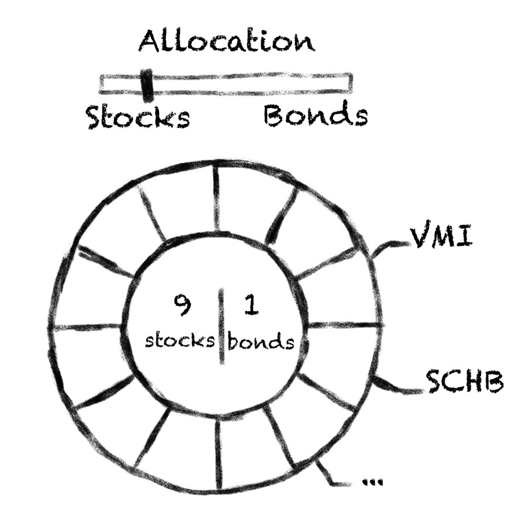
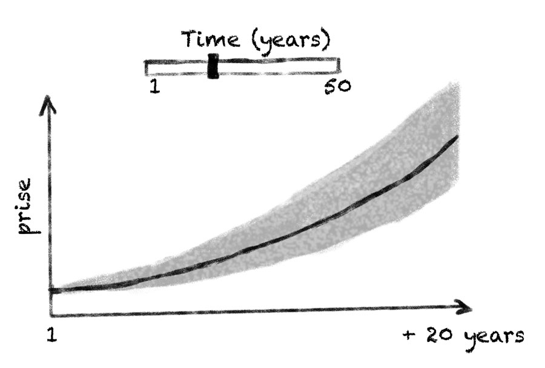
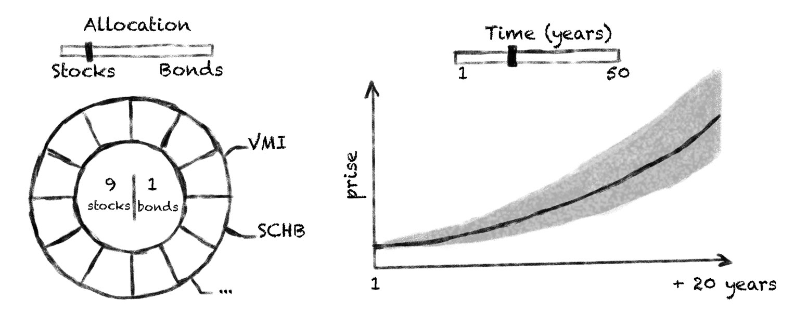
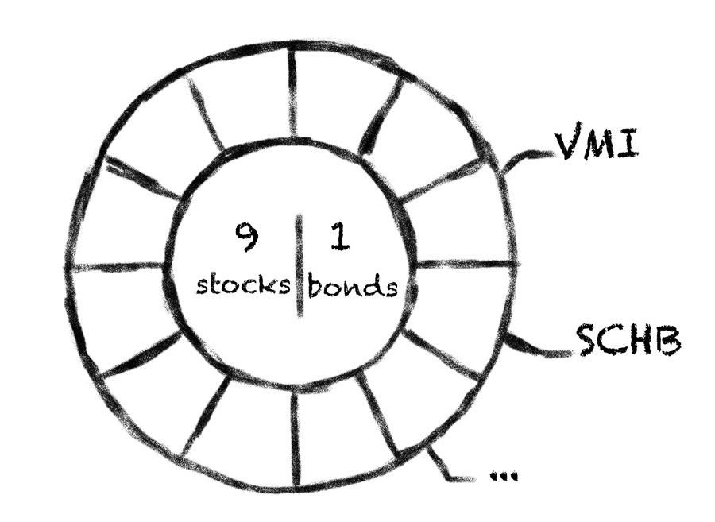
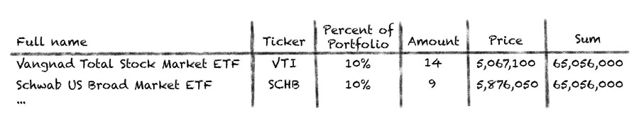
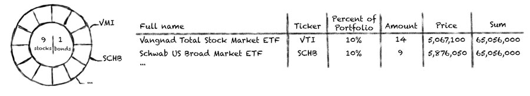
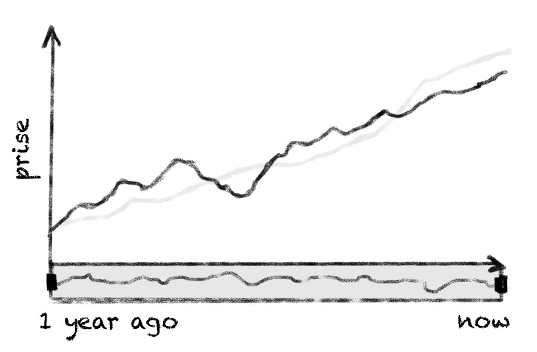
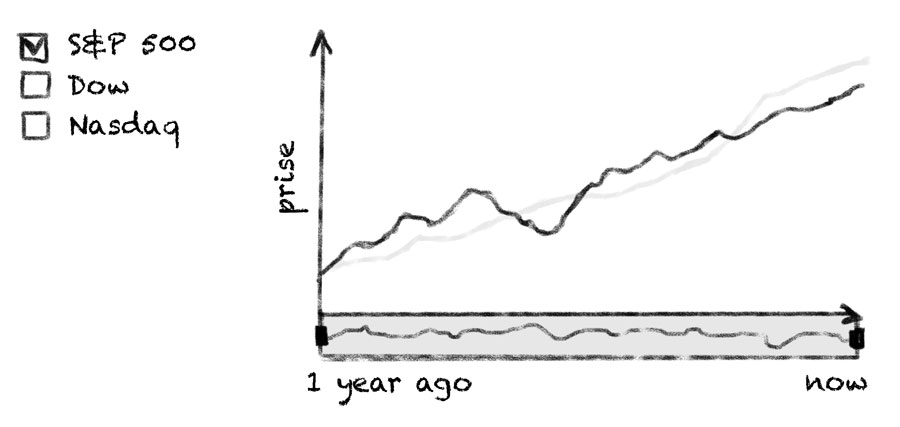

This dashboard creation tutorial is intended to show anyone who is interested in creating solutions for personal portfolio management how AnyChart Charting solution can help. This dashboard is a basic one but it is extendable. Some things are omitted for the sake of clarity.
Some say portfolio management is the art and science, which consists of making decisions about investment content combination and policy, matching investments to objectives, asset allocation for individuals and institutions, and balancing risk against performance.
If you want to be perfectly accurate, investment management is the professional asset management of various securities (shares, bonds and other securities) and other assets (e.g., real estate) in order to meet specified investment goals for the benefit of the investors. Investors may be institutions (insurance companies, pension funds, corporations, charities, educational establishments etc.) or private investors (both directly via investment contracts and more commonly via collective investment schemes e.g. mutual funds or exchange-traded funds).
Or, in plain English, managing investment porfolio is creationg a collections of assets that can diminish the risk inherent in stock markets by diversification or avoiding having too many eggs in one basket.
Whatever the case is, any porfolio management must include the following steps:
Each of the steps needs a dashboard of its' own, so we will create a dashboard for each step and put them in separate tabs.
We are not actually creating an investment porfolio solution - merely a sample, but we want this sample to be easily portable into the real world. So, we will take several popular instruments and obtain data on them from finance.yahoo.com
We will create Stocks/Bonds porfolio with 10 instruments maximum. We will obtain data on 10 Stocks and 10 Bonds instruments to choose from, so we could create any Stocks/Bonds mix with a full count of ten.
From finance.yahoo.com we obtains 10 Stocks и 10 Bonds instruments, along with historical prices for them. By comparing prices a year ago and current one we will get the investment returns index, so we can build a prognosis.
Here is a selection, it has nothing to do with any real world goal and created solely for the demostration purposes:
As we've said earlier, we want to create 3 tabs with a dashboard for each step in each them. Usually to choose the best layout for dashboard you should simply draw it by hand - to do a "paper design", you may do that in your favorite graphics editor or literarly by hand. That's what we will go through with each of the steps.
This tab will provide a user a way to mix the porfolio, it must allow to allocate certain amount of Stocks an Bonds and show this allocation in a comprehensible way. Donut Chart with labels in the center of it, and a slider to change the ratio seem to be just what we need: 
Also, we want to see prognosis for the the porfolio, which changes depending on the content of the porfolio and may be different for different time periods (investment horizon). Line chart is perfect to show the trend, Range area chart - to show possible variations area, and a slider again - to choose the period: 
So, the first tab must look something like that: 
Portfolio Tab will be used to show the porfolio in details: the mix of the instruments and all basic information about them. The mix will be shown as the Doughnut Chart, just as in Goals tab, but there is no slider - chart is static here. 
Also, we want to see the basic information about each of the instruments, such as: Full name, Ticker (stock symbol is an abbreviation used to uniquely identify publicly traded shares of a particular stock on a particular stock market), Percent of portfolio, Amount (bought), Price per one, sum in dollars (spent). Such data will look perfect in a table: 
So, our Porfolio tab comes to this: 
Performance tab, as name implies, shows the performance of our investment porfolio, which we will show using so called Stock Chart, a variation of date time based line chart with advanced scroller capabilites: 
The best way to measure performance is to compare it with the markets, so we will obtain data about S&P 500, Nasdaq, Dow performance and add an ability to compare how our portfolio perform in comparison with them.
Performance tab must look something like this: 
We will store data obtained from finance.yahoo.com in JSON format, it is human-readable text to transmit data objects consisting of attribute–value pairs. It is the most common data format used for asynchronous browser/server communication and can be easily produced with any DBMS and/or scripting language.
Let's look closely at the date for each tab. All data will be stored in /data folder in .json files.
To creata the Donut chart and the Line chart in this tab we need a list of all instruments and their attribute. Data from finance.yahoo.com is converted to JSON and stored in StocksViaBonds.json file.
To show the Donut chart in the Portflio tab we also use data from StocksViaBonds.json file.
To show performance we need data on S&P 500, Nasdaq и Dow. This data is stored in historical.json and financialQuotes.json files.
JSON data is loaded using AJAX requests like this:
$.getJSON("https://raw.githubusercontent.com/AnyChart/investment-portfolio-dashboard/master/src/data/financialQuotes.json",
function (parsed_data) {
...
});
When data is loaded we perform all necessary calculations, format data and pass it to charts using .data() method.
Charting in this sample is done exclusively by the
latest version of AnyChart JavaScript Web
Charting Framework.
AnyChart Users' Guide
AnyChart JavaScript API Reference
To create tabs, handle data and interactions the following tools are used:
We need two charts in the Goals tab. Data can be changed using sliders, so at first we create two charts with all settings and no data.
drawDonutChart function creates a Donut chart and defines all settings. It returns an object with (chart) instance, a link to path object (used to create an arc effectarund slices of the chart) and a link to dataset object, the latter is used to set data to a chart.
function drawDonutChart(container_id) {
var chart = anychart.pie();
chart.interactivity('single');
chart.legend(false);
chart.radius('40%');
chart.innerRadius('60%');
chart.padding(0);
chart.margin(0);
chart.explode(0);
chart.labels(false);
var dataset = anychart.data.set();
chart.data(dataset);
var stage = anychart.graphics.create(container_id);
chart.container(stage);
var path = stage.path().stroke(null).zIndex(10);
chart.draw();
return {'chart': chart, 'path': path, 'dataset': dataset};
When user changes sliderd - we change data in a chart.
Here is a code for Donut chart:
function updateDonutListeners(donutData, instrumentsTable){
var groupIndexes = [];
donutData['chart'].listen('pointshover', function (e) {
drawHoverArc(e.point, donutData['chart'], donutData['data'], donutData['path']);
groupIndexes = [];
var colorFill = '#ffa760';
if (donutData['data'][e.point.index]['group'] == 'bonds') colorFill = '#6fc0fe';
if ($('#table-container').is(':visible')) {
groupIndexes = [e.point.index];
highLightRowInTable(groupIndexes, instrumentsTable, colorFill + ' 0.3')
}
});
donutData['chart'].listen('mouseout', function (e) {
if ($('#table-container').is(':visible')) highLightRowInTable(groupIndexes, instrumentsTable, null);
});
function createChartLabel(index, anchor, groupName, groupColor) {
var label = donutData['chart'].label(index).useHtml(true);
label.position('center');
label.fontColor(groupColor);
label.anchor(anchor);
label.offsetY(-10);
label.offsetX(10);
label.hAlign('center');
label.listen('mouseOver', function () {
document.body.style.cursor = 'pointer';
groupIndexes = [];
for (i = 0; i < donutData['data'].length; i++){
if (donutData['data'][i]["group"] == groupName) groupIndexes.push(i)
}
if ($('#table-container').is(':visible')) highLightRowInTable(groupIndexes, instrumentsTable, groupColor + ' 0.3');
donutData['chart'].unhover();
donutData['chart'].hover(groupIndexes);
donutData['path'].clear();
for (var i = 0; i < groupIndexes.length; i++){
drawHoverArc(donutData['chart'].getPoint(groupIndexes[i]), donutData['chart'], donutData['data'], donutData['path'], true);
}
});
label.listen('mouseOut', function () {
document.body.style.cursor = '';
donutData['chart'].unhover();
donutData['path'].clear();
if ($('#table-container').is(':visible')) highLightRowInTable(groupIndexes, instrumentsTable, null);
});
}
createChartLabel(0, 'left', 'stocks', '#ffa760');
createChartLabel(1, 'right', 'bonds', '#6fc0fe');
}
In updateDonutListeners, donutData is a variable with the new data for a Donut chart, instrumentsTable is used only in Portfolio tab to highlight rows of the rable.
NOTE: We do not actually solve a "Knapsack_problem" when the mix of the instruments is changed, we just imitate the solution. The imitation is implemented in getDataInProportion(), function (not shown here, can be found in the source code).
Two functions are used to create a line chart:
drawForecastChart()
function drawForecastChart(container_id) {
var chart = anychart.area();
chart.tooltip().useHtml(true);
var lineDataset = anychart.data.set();
chart.spline(lineDataset).stroke('#64b5f6').tooltip()
.textFormatter(function(){
return 'Forecast: $' + this.value.toLocaleString();
});
var rangeDataset = anychart.data.set();
chart.rangeSplineArea(rangeDataset).fill('#64b5f6 0.3').highStroke(null).lowStroke(null).hoverMarkers(null).tooltip()
.textFormatter(function(){
return 'High: $' + this.high.toLocaleString() + 'Low: $' + this.low.toLocaleString();
});
chart.tooltip().displayMode('union');
chart.yAxis().labels().textFormatter(function(){return '$' + this.value.toLocaleString()});
chart.container(container_id);
chart.draw();
return {'chart': chart, 'lineDataset': lineDataset, 'rangeDataset': rangeDataset};
}
updateForecastData()
function updateForecastData(forecastData){
var time_data = [];
var approximate_data = [];
var year = new Date().getFullYear();
for (var i = 0; i <= forecastData['length']; i++){
var item = 0;
for (var j = 0; j < forecastData['data'].length; j++){
item = item + forecastData['data'][j]['value'] * Math.pow((1 + forecastData['data'][j]['coefficient'] / 100), i);
}
time_data.push({x: year + i, value: item.toFixed(2)});
var shadow = i / 200;
approximate_data.push({x: year + i, low: item.toFixed(2) * (1 - shadow), high: item.toFixed(2) * (1 + shadow)});
}
if (forecastData['length'] > 0) forecastData['chart'].xScale().ticks().interval(1);
if (forecastData['length'] > 10) forecastData['chart'].xScale().ticks().interval(2);
if (forecastData['length'] >= 20) forecastData['chart'].xScale().ticks().interval(5);
forecastData['lineDataset'].data(time_data);
forecastData['rangeDataset'].data(approximate_data);
}
In the Porfolio tab we create a Donut chart and a table with the detailed information. Donut chart is created using the same function as in Goals tab, the table is created and updated using the following two functions:
drawTable()
function drawTable(container_id){
var table = anychart.ui.table();
table.container(container_id);
table.cellBorder(null);
table.cellBorder().bottom('1px #dedede');
table.fontSize(12).vAlign('middle').hAlign('left').fontColor('#212121');
table.contents([['Name', 'Ticker', 'Percent', 'Price', 'Amount', 'Total Sum']]);
table.getCol(0).fontSize(11);
table.getRow(0).cellBorder().bottom('2px #dedede').fontColor('#7c868e').height(50).fontSize(12);
table.getCol(1).width(60);
table.getCol(2).width(60);
table.getCol(3).width(75);
table.getCol(4).width(60);
table.getCol(5).width(90);
table.draw();
return table;
}
updateTableData()
function updateTableData(table, data){
var contents = [
['Name', 'Ticker', 'Percent', 'Price', 'Amount', 'Total Sum']
];
for (var i = 0; i < data.length; i++){
contents.push([
data[i]['name'],
data[i]['ticker'],
data[i]['percent'] + '%',
'$' + parseFloat(data[i]['price']).toLocaleString(),
data[i]['amount'],
'$' + parseFloat(data[i]['value']).toLocaleString()
]);
}
table.contents(contents);
table.draw();
}
Functions below are used to create and update a chart in Peformance tab. You can see that some extra functions are used there to recalculate data and more. We don't show them here for they are not essential to the sample at all, if you want to know how they work – please refer to the source code of the sample.
drawStockChart()
function drawStockChart(container_id){
var stock = anychart.stock();
var plot = stock.plot();
plot.yAxis(1).orientation('right');
stock.padding(0, 80, 0, 80);
stock.container(container_id);
var mainTable = anychart.data.table('date');
var mainMapping = mainTable.mapAs({value: {column: 'value', type: 'close'}});
plot.line(mainMapping).name('Portfolio').stroke('2 #1976d2');
var SP500Table = anychart.data.table('date');
var SP500Mapping = SP500Table.mapAs({value: {column: 'value', type: 'close'}});
var SP500Series = plot.line(SP500Mapping).name('S&P 500').stroke('1 #ef6c00');
var DowTable = anychart.data.table('date');
var DowMapping = DowTable.mapAs({value: {column: 'value', type: 'close'}});
var DowSeries = plot.line(DowMapping).name('Dow').stroke('1 #ffa000');
var NasdaqTable = anychart.data.table('date');
var NasdaqMapping = NasdaqTable.mapAs({value: {column: 'value', type: 'close'}});
var NasdaqSeries = plot.line(NasdaqMapping).name('NASDAQ').stroke('1 #ffd54f');
stock.scroller().line(mainMapping);
stock.draw();
return {'stock': stock, 'mainTable': mainTable,
'SP500Table': SP500Table, 'DowTable': DowTable, 'NasdaqTable': NasdaqTable,
'SP500': SP500Series, 'Dow': DowSeries, 'NASDAQ': NasdaqSeries};
}
changeStockChart()
function changeStockChart(stockData){
stockData['mainTable'].remove();
var initial_sum = stockData['mainData'][stockData['mainData'].length - 1].value;
stockData['mainTable'].addData(stockData['mainData']);
stockData['SP500Table'].addData(calculateIndexPrices(stockData['indexesData']['S&P 500'], initial_sum));
stockData['DowTable'].addData(calculateIndexPrices(stockData['indexesData']['Dow'], initial_sum));
stockData['NasdaqTable'].addData(calculateIndexPrices(stockData['indexesData']['NASDAQ'], initial_sum));
}
You can a live sample of this dashboard: Investment Porfolio Management Dashboard.
AnyChart Investment Porfolio Dashboard solution includes two parts:
If you have any questions regarding licensing - please contact us. sales@anychart.com